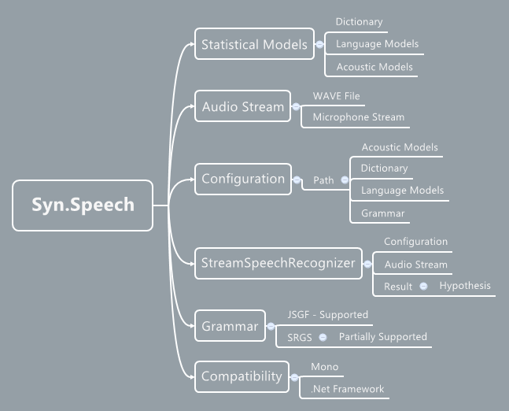

Syn Speech - Speech Recognition Library
Syn Speech is a flexible speaker independent continuous speech recognition engine for Mono and .Net framework. Using Syn Speech developers can easily add offline speech recognition to their projects without any advanced configuration or changes.
Syn Speech even supports JSGF grammar files for faster choice based speech recognition and encapsulates many of the state-of-the art speech recognition features from CMU Sphinx which was created via a joint collaboration between the Sphinx group at Carnegie Mellon University, Sun Microsystems Laboratories, Mitsubishi Electric Research Labs (MERL), and Hewlett Packard (HP), with contributions from the University of California at Santa Cruz (UCSC) and the Massachusetts Institute of Technology (MIT).
All CMU Sphinx Models can directly be loaded into Syn Speech without any modification. These include (but are not limited to) Acoustic Models, Language Models and Phonetic Dictionaries published by Carnegie Melllon University.
NuGet
PM> Install-Package Syn.Speech
Simple Architecture

Platform Independent
Because Syn Speech doesn't rely on any external library the same library can run on a variety of platforms (including Mac, Linux and Windows) without requiring any special changes using Mono and .Net framework respectively. Syn Speech is one of the first flexible speech recognition engine that worked under Mono.
Demo Application and Tutorial
In our github repository we've added a working Demo Application that demostrates continuous and grammar based speech recognition using Syn Speech. To download the demo application please visit Syn Github Repository.
.Wav Audio Files
Syn Speech library can load and transcribe Speech to Text using .Wav Audio files. It is recommend that you use Wav files with 16Khz Sample Rate for better results.
JSGF Grammar Support
Syn Speech also enables usage of JSpeech Grammar Format files for faster and choice-based speech recognition. Simple enable the use grammar option and specifiy the file and the name of the Grammar to use. The grammar parser will parse the grammar file in seconds and you are done with the grammar part. Syn Speech also partially supports Speech Recognition Grammar Specification (SRGS) for single-word based speech recognition.
More information on JSpeech Grammar Format can be found here
Speech Data
As training and preparing Models for speech recognition is a heavy and time consuming task. Syn Speech uses CMU Sphinx's Acoustic Models, Language Models and Phonetic Dictionary to free you from the burden of creating them on your own. All these Models are freely available in their CMU Sphinx Repository and can be loaded into Syn Speech with ease.
Free for FOSS Projects
Syn Speech is FREE for FOSS (Free and Open Source Software) Projects. Which means if you are working on a free and open source project (non-commercial and/or academic) you can use Syn Speech in your project without any restrictions.
Platforms Supported


Requirements
- .NET Framework on Windows environment.
- Mono on Mac OS or Linux environment.